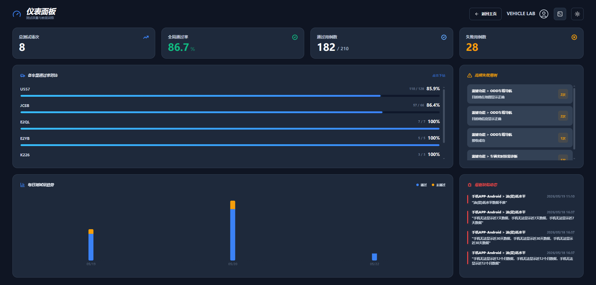
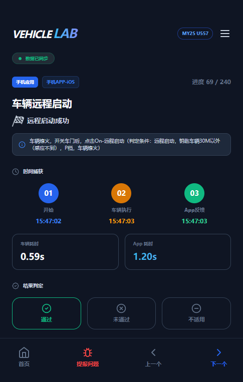
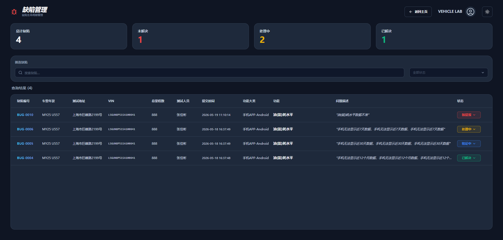
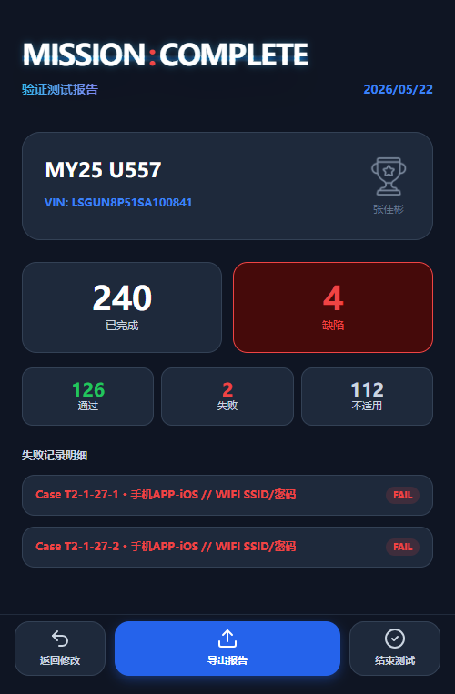

现代化车载外场测试数据采集与管理系统
地下车库、隧道等无网/弱网环境导致数据提报中断，测试人员经常处于“盲测”状态，风险极高。
手工记录与分散提报导致流程脱节，后期手动合并报表效率极其低下，且难以溯源元数据。
专为高品质车型测试设计

移动优先设计： 专为 Cadillac/Buick 车内狭小空间作业打造的响应式界面，手机触屏流畅执行用例。
离线优先 (Offline-First) 架构：
当进入地下库等无网环境时，打标数据自动转存本地浏览器缓存 (IndexedDB)。
智能同步 (SyncManager)：
网络恢复后后台静默推送同步，彻底告别断网数据丢失的焦虑。



秒级自动化报表排版生成
彻底告别测试后繁杂的文档手工整理工作，系统支持一键将海量测试记录及缺陷，直接转化为基于 Shanghai OnStar 业务标准格式的最终交付物（Excel 等格式）。
* 数据基于单次外场测试完整任务预估耗时对比
感谢聆听，让外场测试体验更智能、更高效